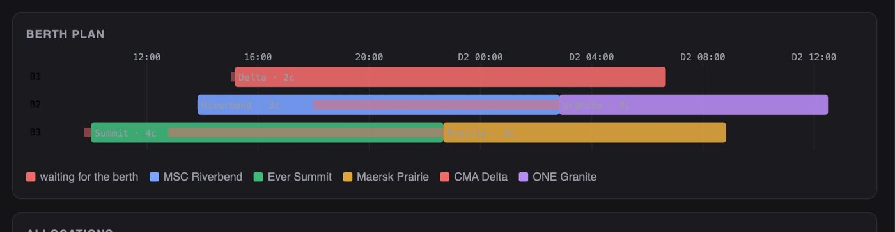
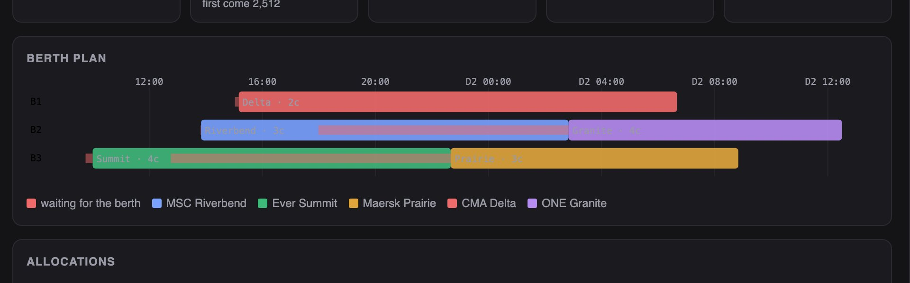
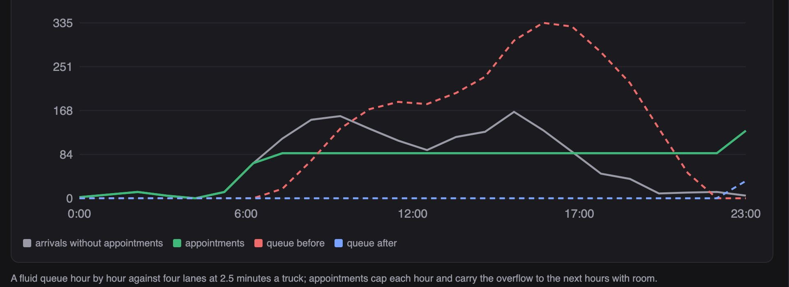
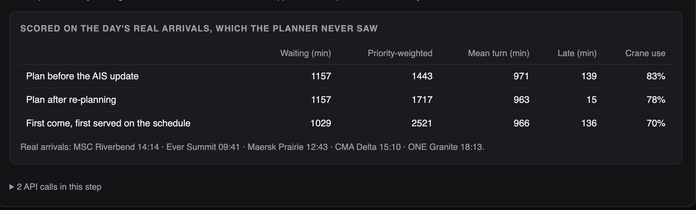

Python · Optimisation · Port operations · 2026-10
A Ship Is Four Hours Late. Whose Berth Does She Take?
A control tower for a simulated container terminal: it reads AIS to see a ship is 406 minutes late and landing on another's berth, re-plans berths and crane counts in a constraint model, stacks 2,830 import boxes with 0 planned rehandles (2,079 if stacked in discharge order), moves 40 customs-held boxes aside, and spreads 1,610 trucks into gate appointments that cut the mean wait from 113 minutes to 2.

Built from a written blueprint as one vertical slice. The terminal is simulated: vessels, AIS, containers and trucks come from a generator I wrote, which is what lets each plan be scored on the day's real arrivals. Crane rates, lane times and the yard are my assumptions; zero planned rehandles is a property of the generator's exact pickup times. No language model is used. Not built: real AIS or terminal systems, rail, yard occupancy over time, tides, Kafka, Terraform, single sign-on.
01 — The problem
A container terminal is a queue of queues: ships wait for berths, berths wait for cranes, boxes wait in stacks that have to be dug out, trucks wait at a gate that serves a fixed number an hour. One ship arriving late pushes the whole day over, and the planner finds out from a phone call. Can software see the delay coming, re-plan the berths and cranes together, stack the yard so nobody digs, and smooth the gate?
Blueprint 5 of fifteen in a third build book, built as its demo scenario end to end.
02 — What I built
A Python service on PostgreSQL with a background worker and a web page, started by one docker compose up.
- A simulator of the day: five calls with hidden real arrivals and AIS tracks, 2,830 import boxes, 1,610 trucks.
- An arrival model on AIS distance and speed, tested on held-out calls.
- A berth and crane planner in one constraint model, with first come, first served beside it.
- Yard stacking that counts rehandles, and customs holds moved to the hold block.
- Gate appointments from a queue model, and a control-tower view scored on the real arrivals.
03 — How it was built
- 01
The ship is where the AIS says, not where the schedule says
At 10:00 the first ship of the day was due three hours ago and nothing has been heard. Her first AIS point puts her 60 nautical miles out at 14 knots. Distance over speed says 14:07; a model trained on 320 past calls, which knows that late ships slow for the pilot and queue behind others, says 13:49. The error on held-out calls is 8.9 minutes against 22. Either way she lands on Maersk Prairie's berth.
pred, naive = engine.predict_eta(engine.eta_model(w["seed"]), {"t": latest["t_min"], "distance_nm": float(latest["distance_nm"]), "speed_kn": float(latest["speed_kn"])}, v["eta_min"], waiting, 0) - 02
Berths and cranes in one model
How long a ship stays at a berth depends on how many cranes she gets, and cranes are shared by the whole quay, so the two cannot be planned apart. The model has one optional interval per vessel, berth and crane count; no two vessels overlap on a berth; a cumulative constraint keeps cranes in use at or below nine; the berth must be long and deep enough. It solves to optimality in a few hundredths of a second, and it gives the big ships four cranes and the small ones two, which is where most of the gain over first come, first served comes from.
m.AddCumulative(crane_iv, crane_dem, world.CRANES) - 03
Lateness against waiting
The first objective counted only waiting minutes, and the planner let a low-priority feeder finish hours past its window to shave waiting off the others. A late penalty three times the waiting weight fixed that, and it shows in the replay: the re-plan finishes 124 minutes less late than keeping the broken plan but waits 274 priority-weighted minutes more. The planner does what the weights say, and the page says what it did.
cost += [WAIT_WEIGHT * v["priority"] * (s - a), LATE_WEIGHT * v["priority"] * late] - 04
Stacks that nobody has to dig
A rehandle is a box stacked on top of one that leaves earlier. Boxes with the same mode and the same six-hour pickup window share a stack with the latest pickup at the bottom, so the planned count is zero against 2,079 for stacking in discharge order. That zero describes the generator, whose pickup times are exact; real appointments slip, and the page says so. When customs holds 40 boxes, leaving them would cost 62 rehandles; moving them to the hold block costs 40 moves now.
rehandles += sum(1 for below in stack["boxes"] if below["pickup_after_h"] < c["pickup_after_h"] and below["index"] not in held) - 05
Appointments move trucks, they do not make the gate faster
Four lanes at two and a half minutes a truck serve 96 an hour; the morning and afternoon peaks bring 150. A fluid queue hour by hour gives a mean wait of 113 minutes and a queue of 335 trucks. Appointments cap each hour at 90% of capacity and carry the overflow to the next hours with room: 438 trucks move later, the mean wait falls to 1.7 minutes. The queue model has no randomness, so this is the best case for a gate that runs to its appointments.
take = min(cap, total) out.append(take) carry = total - take
04 — Results
The demo. The re-planned berths: three berths across the day, waiting shown as the red lead-in before each ship goes alongside.

The gate without and with appointments:

Scored on the day's real arrivals:

On three other simulated terminals, 18 days:
| System | Simple | |
|---|---|---|
| Arrival error | 8 min | 23 min |
| Weighted waiting | 1,824 | 2,623 |
| Late beyond window | 48 min | 324 min |
| Crane use | 81% | 69% |
| Gate wait | 0.4 min | 93.5 min |
"Simple" is distance over speed for arrivals, first come, first served with three cranes each for berths, and no appointments at the gate. Perfect knowledge of arrivals would reach 1,721 weighted minutes and 27 late.
Honest limits. The planner trades waiting for lateness as its weights tell it, and the demo shows the price. Zero rehandles is the generator's exact pickup times, not a real yard. The gate model is a fluid queue with no randomness. Tides, pilots, labour shifts and a yard that is already full are all missing.
Checks. 13 tests, including: no two vessels on a berth at once, cranes never over nine, a vessel locked to a berth stays there, a berth too small is refused, every stack is filled from the ground up, the appointment total equals the truck total, a duplicate AIS point stores nothing, and one terminal cannot see another's calls.
05 — What I'd do next
- A yard that fills and empties through the day, so rehandles are what happens rather than what is planned.
- Re-planning on a rolling basis as each AIS point arrives.
- Tides and pilot windows in the arrival model and the berth constraints.